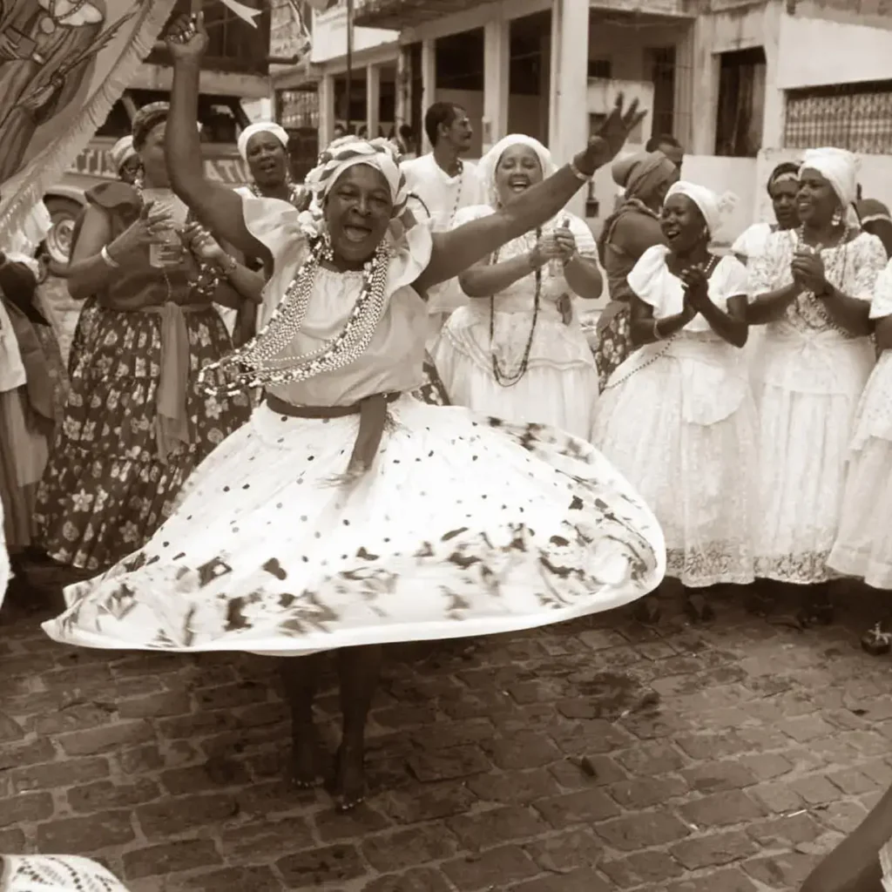

Meu primeiro post
Por: Bethina da Veiga Barbosa
Boas-vindas ao meu novo blog! Aqui vou falar sobre um dos melhores gêneros musicais do Brasil.
O samba é um gênero musical originado no Brasil e um dos maiores símbolos de identidade nacional e um dos mais importantes fenômenos culturais. Ele se originou especificamente na Bahia, no século XIX e tem raízes afro-brasileiras
A palavra "samba" está presente na língua portuguesa ao menos desde o século XIX, e designava originalmente dança ou bailado popular. Com o tempo, seu significado foi mudando e passou a ser "dança de roda semelhante ao batuque" e também "gênero de canção popular".
Em 1910, o samba começou a se consolidar como um gênero musical e teve seu grande primeiro marco a obra "Pelo Telefone", lançado pela Odeon (uma gravadora fundada na alemanha). Embora essa obra tenha sido identificada como samba, ela apresenta mais semelhança rítmica e instrumental ao maxixe.
Esse gênero musical está presente em todas as regiões brasileiros, tendo em cada uma delas uma nova incorporação de elemento ao ritmo, o que mesmo assim mantém a característica fundamental do samba. Dessa forma, esse gênero muda de estado para estado a forma como é dançado, como é o ritmo e quais instrumentos o acompanham. Os principais tipos de samba são: o samba da Bahia, o carioca e o paulista. O samba da Bahia foi influenciado pelos batuques e canções indígenas, no Rio de Janeiro, é muito forte a presença do maxixe, já em São Paulo, o samba teria sons mais graves vindos de festas das colheitas de café nas fazendas. No entanto, essa divisão do gênero causa controvérsias. O próprio Adoniran Barbosa, um dos maiores compositores paulistas, rejeitava esse tipo de classificação.

Principais tipos de samba
Existe diversos tipos de samba, cada um com suas próprias características. Os principais tipos de samba incluem: samba de roda,samba-enredo, samba canção, samba exaltação, samba de gafieira e pagode. O samba de roda surgiu na Bahia no século XIX e está associado à capoeira e ao culto aos orixás. Ele é caracterizado por palmas e cantos, enquanto os dançarinos bailam dentro de uma roda.
O samba enredo surgiu no Rio de Janeiro na década de 30 e está atrelado ao tema das escolas de samba. Ele é marcado por apresentar canções com temáticas históricas, culturais e sociais. Ele surgiu por causa da profissionalização do carnaval e puxa o desfile da escola de samba e transmite o enredo da apresentação.
Surgido na década de 1920, no Rio de Janeiro, o samba-canção possui como tema central canções de amores não correspondidos, traição, solidão, saudade, etc. Algo que era muito marcante nessa variante do samba é a forma como as músicas são escritas, pois transmitem muita delicadeza. Prostitutas nessas músicas por exemplo, que possuem uma profissão que não é bem vista pela sociedade, eram descritas de forma suave, como "flor da noite", "dama". Além disso, o samba canção contava com uma grande orquestra. Esse tipo de samba apresentou grandes sucessos, como "Marina" (Dorival Caymmi), "Ninguém me ama" (Antônio Maria, Fernando Lobo) e "Estrada do Sol" (Dolores Duran, Tom Jobim).
Derivado do Maxixe, o samba de gafieira surgiu na década de 1940 no Rio de Janeiro. Nesse tipo de samba, o homem conduz sua dama na dança. O homem seria o "malandro da Lapa", e vestiria um terno branco, sapato preto e barnco ou marrom e branco, camisa listrada preto e branca ou vermelha e branca e um chapéu Panamá e Palheta. Dentro do bolso, o malandro carrega uma navalha. Na dança, é como se o malandro estivesse protegendo sua dama.
O samba exaltação surgiu em 1939 e exaltava as escolas de samba. O surgimento desse estilo se deu pela composição "Aquarela do Brasil". Nele, a cultura e natureza do país é exaltado.
O pagode é um subgênero do samba nascido no Rio de Janeiro entre as décadas de 1970 e 1980 e surgiu da tradição das rodas de samba. É marcado por um ritmo repetitivo e instruentos de percussão com sons eletrônicos.
Instrumentos do samba
Inicialmente, o samba contava com palmas, atabaques e tambores. Hoje em dia, ele utiliza diversos instrumentos. Os mais importântes são os instrumentos de percussão.
Os principais instrumentos que marcam esse ritmo são: cavaquinho, violão, tamborim, atabaque, agogô, cuíca, pandeiro, reco-reco e flauta transversal.
Principais sambistas brasileiros
Alguns dos principais sambistas brasileiros são: Cartola, Beth Carvalho, João Nogueira, Adoniran Barbosa, Dona Ivone de Lara, Carmen Miranda, Zé Keti, Martinho da Vila, Zeca Pagodinho e Carla Nunes.